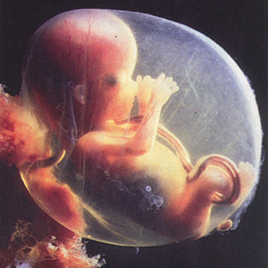

Bullshit, I can think of several factors that can alter a person’s appearance after conception.
in natural circumstances I’m talking about, excluding things like accidents, tattoos, personal choices… I’m talking about the basic appearance is determined at conception, the colour of their hair, their sex, their shape of their face, nose, ears, their height, things like that.
What does “appearance” or “physical description” have to do with being human?
Actually, they’re not a human being until they’re born.
No, no its really not. Without a womb a zygote is nothing more than a mass of cells that will never be anything other than a mass of cells.
No, that’s “I only want one child please, but I need 20 zygotes to make sure that one of them actually takes”. We haven’t got anywhere near the GATTACA stage of selecting out children that are genetically superior to others because we can’t read the DNA of an 8-cell zygote.
And why in the hell is that a bad thing? My mum had three children before me and they all died. Why? Because they had a genetic abnormality which meant that their enzymes didn’t function properly, and they died after just a few hours of being outside the womb. Now I’m sorry, but if my mum could’ve chosen NOT to have those kids, I think she would’ve done so in a heartbeat.
If there was a more efficient or effective way of making the process work, then they would have done it. By changing it and making “the sperm do their part”, you potentially undermine the effectiveness of the process and make it useless for the people who need this process to have children.
And what I said in response to this is that you’re limiting a potentially hugely useful field of research on the basis that “we’re killing people and that’s wrong”. But we’re not. Zygotes aren’t going to become more human when we dump them out with the trash; we’re actually using them in a way that might solve a whole range of diseases. We’re not ripping womens’ uterii open and stealing unborn children; we’re taking the unused, unneeded and unwanted zygotes and putting them to good use.
Only someone who ignores prenatal science would say that. A philosophical opinion out of touch with reality doesn’t change the universal scientific truth that Human life starts at conception.
Human embryo ≠ Human being

Looking away from the facts won’t change the fact that you were once as young as this human here. Apathy won’t get you anywhere.
Cup o Joe you’re ridiculous. The entire thread you use morals to argue your side, yet when it is presented that millions of eggs and billions of sperm die every day you quickly step to the side of science to defend yourself. You are so quick to draw a line but I am curious as to why, so let’s take a look.
You argue that a zygote or fetus is a human being because of its potential, not because of what it has right now. I am basically saying the same thing Soup said a page or 2 back, but evidently you must have “overlooked” that post because I see no rebuttal towards that statement. If you support every potential life, you support the billions of sperm that are being ejaculated into the toilet right now from guys masturbating. You also support the thousands of eggs being flushed from women’s systems all throughout the world currently. In fact, to say you don’t implies you don’t always care for the potential of human life. So, I am left wondering what the hell you are doing on these forums when you should be at your local chapel/mosque/whatever praying for those billions of lives being lost every second?
Your quick switch from morals to science makes it quite obvious you want nothing more than to be right. When proven wrong you resort to your last hope, even if it is on the opposite end of the thinking spectrum to do so (morality is based on instinct, science on rationality, the two opposite sides of humanity). You can continue to argue all day long, but the truth is your argument is inherently flawed because it is based on the idea that science counts when it suits your moral perspective and morality applies everywhere else.
The fact of the matter is you can stick by your morals and we can’t debate it (because there is nothing rational about morals), but when you abandon your morals to a scientific outlook (which can be applied precisely the same to your other moral views), you are swapping from side to side. You aren’t fighting against wrong or fighting for justice, you’re fighting to be right, which isn’t very moral of you honestly.
Edit:
In response to your latest post:
Looking away from the facts won’t change the fact that you were once as young as this human here.
No matter how hard you believe in something, it won’t make it true.
Actually, I’m looking facts in the face. And that picture is not one of a human being. Human, yes, but not a human being.
By the way. Embryonic stem cells do not come from that stage of development. Here’s a more realistic picture:
That’s what I was thinking :freeman:
What’s the point of this debate?
I gotta say it’s interesting how some of the posts that actually make an interesting and neutralizing point (like how embryonic stem cells can be harvested without harming the fetus) get ignored by the opposition. But by all means, continue your polarized discussion.
If people ask me if I’m pro life or pro choice, I say neither, I’m pro death, everyone should die soon.
That’s a FETUS[/SIZE] Goddammit!! Not a stem cell!! :’(
You’re not supposed to bring that picture up until the Abortion thread pops up!
Who’s looking away from facts? Sure, I was like that at one stage, but would I consider a developing fetus anything like the person I am today? No. Until your brain starts to develop properly after birth, there isn’t much difference between you and other animals.
OH GOD THINK OF THE CHILDREN
Now, there seems to be some debate on when something with human DNA is considered morally a human life.
Rest assured that an independent panel of ethicists has absolved any research facilities, research scientists, and all test subjects of any moral responsibility for embryonic stem cell research.

seriously though, this is a debate that will rage on for a LONG time. I personally don’t think humans are people until they show self-awareness. This is also why i have heated debates with others on whether certain animals are people.
But just because something isn’t a human doesn’t necessarily make it right to destroy it in the name of science.
I also don’t believe that just because something is morally wrong it should be made illegal. As long as people aren’t being hurt by this research, it shouldn’t be outlawed.
just my three cents ('cause of inflation)
Men? HAHAHAHAHA
I already addressed that with science, sperm are not human, it has 23 chromosomes.
It’s not about the potential, it is human. you sound like southerners 150 years ago: “You argue that a colored person is a human being because of its potential, not because of what it has right now.” Your philosophy is the exact same as the prochoicers 150 years ago.
Again, sperm are not human beings but their function should be respected as a seed to create life.
Periods are completely irrelevent to this topic and again, eggs are not human but should be respected as a carrier to create life.
Sperm and Eggs are not human. It’s at the moment that the sperm joins with the egg and the egg hardens its membrane that they’re human. At that point it’s a HUMAN zygote.
No, Science comes from Latin and is the study of knowledge which after every single discovery confirm the need for morals.
Morals and Science go hand in hand, otherwise we’d all be dead from the cold war.
Morals and science go hand in hand. If you ignore that basic fact then you might as well be an advocate for WWIII and assisted suicide.
Yes half of my genes came from my father and half of my genes came from my mother I can’t ignore that but I wouldn’t exist if they hadn’t joined together. each on their own doesn’t make me human, it’s when they’re joined together (conception) that I’m human until death.
BTW i’ve said the same thing since the first post, it’s at conception that someone is created. It’s a basic scientific fact. Even a 5th grader understands that.